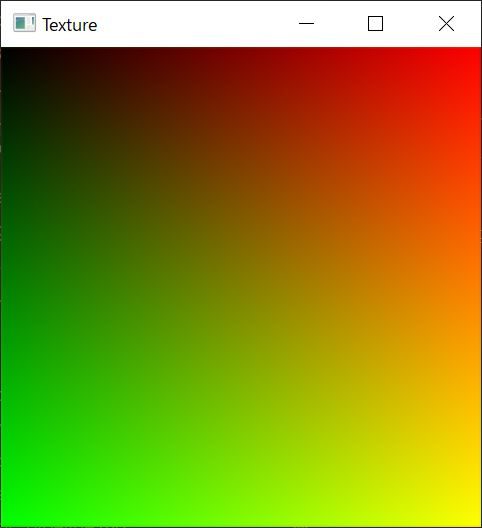

Texture¶
{kind=link}
uv は 左上原点になるようにした。
../../assets/texture.hlsl¶
1Texture2D t0;
2SamplerState s0;
3
4void vsMain() {}
5
6struct DummyInput {};
7struct GS_OUTPUT {
8 float4 position : SV_POSITION;
9 float2 uv : TEXCOORD0;
10};
11
12[maxvertexcount(6)] void gsMain(point DummyInput input[1]
13 : POSITION,
14 inout TriangleStream<GS_OUTPUT> output) {
15 GS_OUTPUT element;
16
17 // d3d default clock wise
18
19 // 0
20 element.position = float4(-1, -1, 0, 1);
21 element.uv = float2(0, 1);
22 output.Append(element);
23 // 1
24 element.position = float4(-1, 1, 0, 1);
25 element.uv = float2(0, 0);
26 output.Append(element);
27 // 2
28 element.position = float4(1, 1, 0, 1);
29 element.uv = float2(1, 0);
30 output.Append(element);
31
32 output.RestartStrip();
33
34 // 3
35 element.position = float4(1, 1, 0, 1);
36 element.uv = float2(1, 0);
37 output.Append(element);
38 // 4
39 element.position = float4(1, -1, 0, 1);
40 element.uv = float2(1, 1);
41 output.Append(element);
42 // 5s
43 element.position = float4(-1, -1, 0, 1);
44 element.uv = float2(0, 1);
45 output.Append(element);
46
47 output.RestartStrip();
48}
49
50float4 psMain(GS_OUTPUT V)
51 : SV_Target {
52 // return float4(V.uv, 0, 1);
53 return t0.Sample(s0, V.uv);
54}